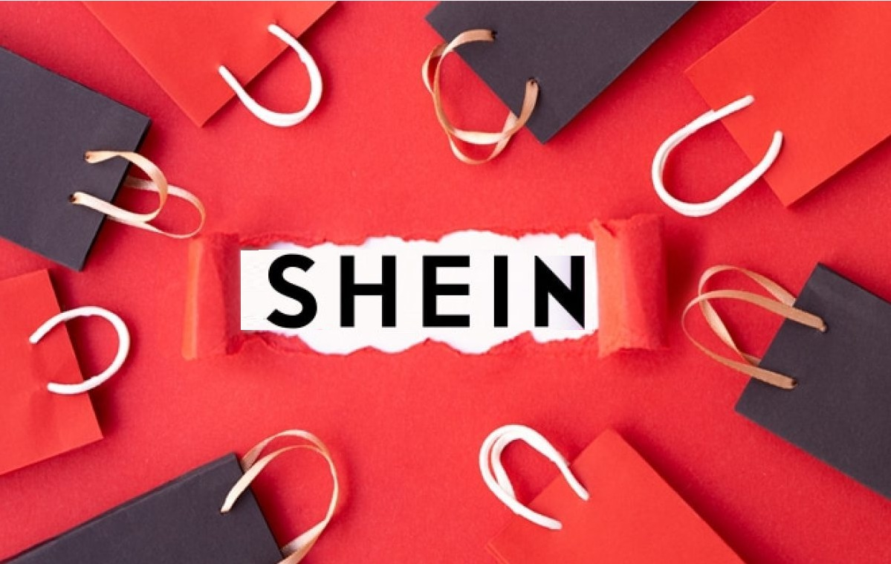

FUNDACION
SHEIN se fundó con la visión de hacer la moda accesible para todos. Como mercado integrado líder a nivel mundial, tenemos la responsabilidad y el compromiso de apoyar a las comunidades locales donde trabajamos y de preservar nuestro planeta. Creemos que la ropa que usamos refleja nuestra personalidad y queremos empoderar a todos para que exploren y expresen su individualidad.
